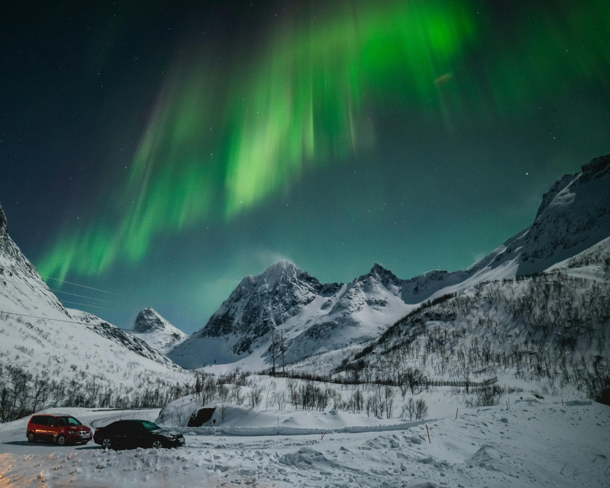

Norway
Have you ever seen the Northern Lights in your life? If not, you should try to come and see that in Norway.Imagine standing under a sky filled with vibrant colors dancing above.If you visit in the summer, you can experience the Midnight Sun too, where the sun doesn't set for weeks, especially above the Arctic Circle. It’s a magical phenomenon that allows for extended hours of daylight to explore.
Norway is committed to sustainability and environmental conservation. The country leads the way in eco-friendly travel, with cities like Oslo offering extensive cycling paths, electric vehicle charging stations, and green spaces. Norway's tourism industry also supports responsible travel, encouraging low-impact activities like hiking, kayaking, and cycling to protect its stunning natural environment.
Whether you're looking to experience thrilling outdoor adventures, immerse yourself in a rich cultural history, or simply escape to some of the most beautiful natural landscapes on earth, Norway is the place to be.
